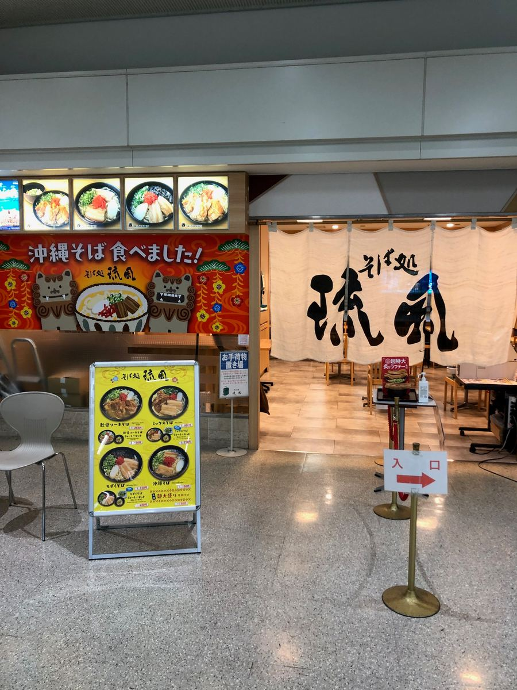
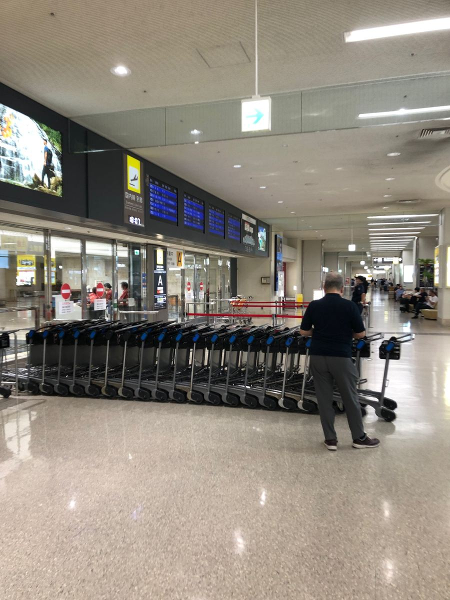
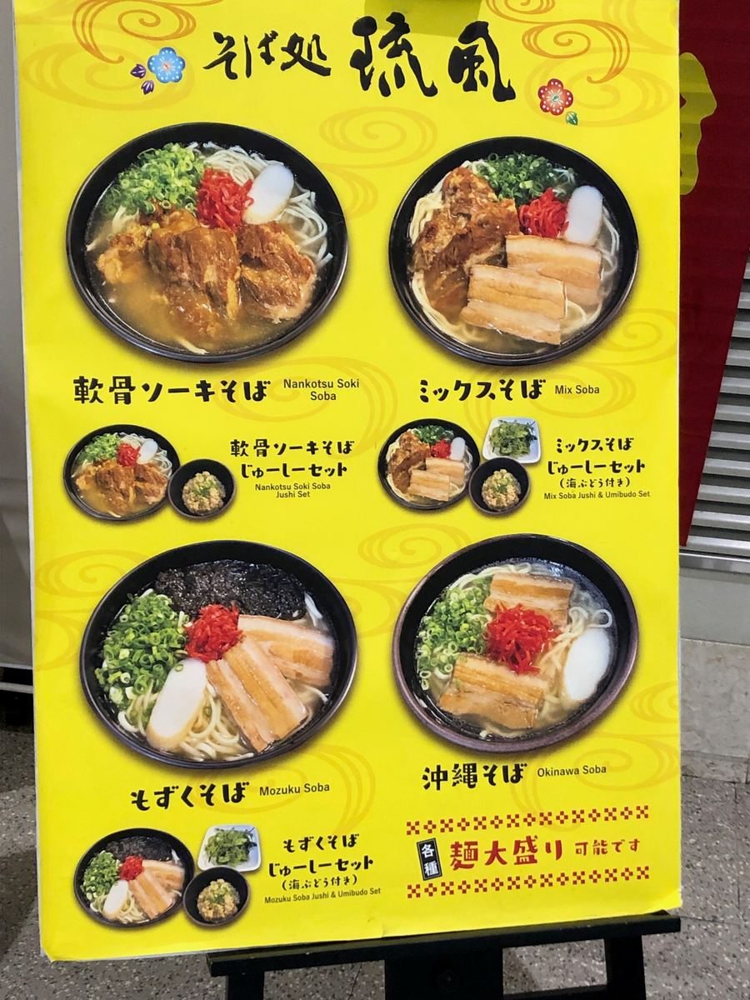
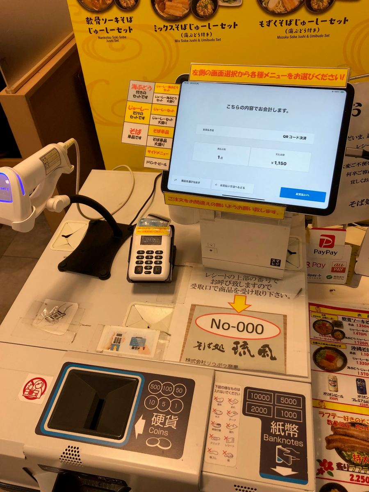
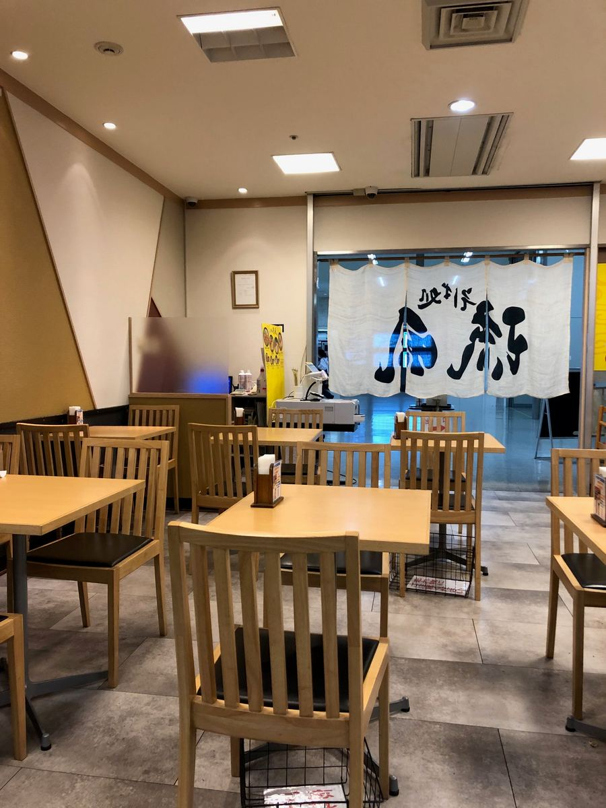
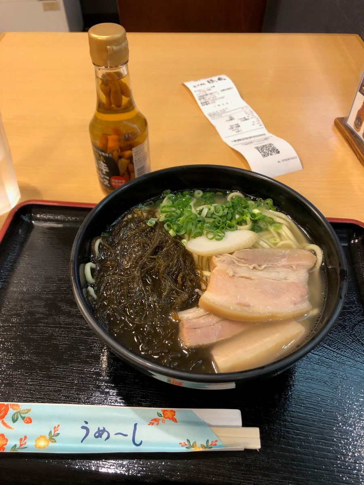
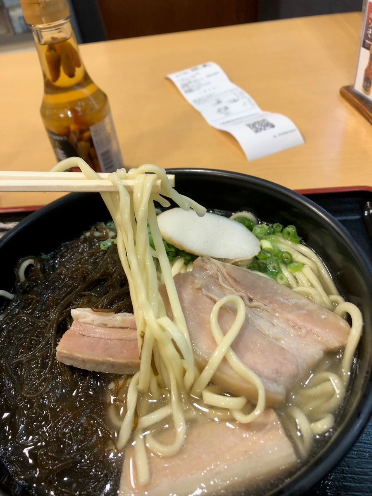

沖縄そば巡りの旅、今回は那覇空港国内線旅客ターミナル内にある「そば処 琉風」さんをご紹介します🍜
2025.5に食べました😆

ホリエモンのグルメアプリで紹介されているのを見て、前からずっと気になっていたお店です😄 空港での食事といえばここ、というくらい定番のお店みたいですね。

メニューを見ると、軟骨ソーキそば・ミックスそば・もずくそば・沖縄そばの4種類が基本ラインナップ。じゅーしーセットにできるものもあって、もずくそば・ミックスそばのセットには海ぶどうまで付くみたいです😋 地場産のもずくをたっぷりトッピングした「もずくそば」なんていう空港店らしい一杯もあります。もずくは久しぶりだったので、今回はこちらを注文してみました。

券売機で食券を購入して席へ。店内はテーブル席がゆったり並んでいて、搭乗前や到着後にサクッと座って食べられそうな雰囲気です。


しばらくして「もずくそば」が登場！黒いもずくがどっさり乗って、三枚肉・白かまぼこ・紅生姜・ネギと、見た目からして食欲をそそりますね😆

まずはスープから。豚骨出汁のスープで、クセもなく食べやすい味わいですね。
次に麺をいただきます。中太のストレート麺で、柔らかめの仕上がりでした。

もずくをすくって食べてみると、あまり磯の風味は感じられなかったですね。もう少しもずくの香りが立っていると、より個性が出たかもしれません。
具材の三枚肉は、筋感がバリバリでしたね^^;
評価（9点/15点）：ホリエモンのグルメアプリで紹介されていて前からチェックしていたお店でしたが、実際に食べてみると普通な一杯でした。とはいえ、空港ですぐ沖縄そばを食べられるのはありがたいですね。到着後や搭乗前にサクッと沖縄そばを楽しみたい方にはおすすめです👋
麺 ：★★★☆☆（3）
スープ：★★★☆☆（3）
具 ：★★★☆☆（3）